![]()
library(tidyverse)
library(DBI)
library(dbplyr, warn.conflicts = FALSE)
library(farr)SIRCA ASX End of Day (EOD) collection
Australia
SIRCA
ASX
CSV
Parquet
dbplyr
Overview
SIRCA’s ASX EOD (end of day) collection provides daily prices for ASX-listed companies and facilitates reliable measurement of security returns, with all data being retained for delisted companies. This note, based on SIRCA’s own Guide to ASX End of Day Prices.pdf, provides an introduction to the SIRCA ASX EOD collection.
The SIRCA ASX EOD collection includes the tables listed in Table 1. More details can be found in my separate document on importing SIRCA ASX EOF data here.
| Table | Description | Primary key |
|---|---|---|
si_au_ref_names |
Name and ticker histories for listed companies from January 2000 | gcode, securityticker, listdate |
si_au_prc_daily |
Complete daily price, volume and value histories | gcode, date, seniorsecurity |
si_au_retn_mkt |
Daily value- and equal-weighted whole market returns | date |
si_au_ref_trddays |
Record of ASX trading dates since January 2000 | date |
All company names and ticker codes are recorded in a separate table—si_au_ref_names—which links names and tickers through time with a permanent “group code” identifier created by SIRCA named gcode. SIRCA designed gcode to allow users to build price and return series for series for a company’s shares over time even if its ticker code changes. The same gcodes are used across a number of SIRCA’s data sets.
he si_au_prc_daily table includes all end-of-day trade prices for the equity securities of all ASX companies starting from January 2000. This table also includes dividend and franking events; capital returns; adjustments for numerous corporate action events, such as splits, consolidation, bonus issues, renounceable and non-renounceable issues; and total daily traded volume and value; and, the number of issued shares.
Other components of the SIRCA ASX EOD library are si_au_retn_mkt which provides value- and equal-weighted all-of-market daily returns, which SIRCA generates from all observable daily company returns.
SIRCA provides si_au_ref_trdday, which identifies all ASX trading days since the start of January 2000 and can be used to identify gaps in company price series, from suspensions or thin trading.
Finally SIRCA provides a detailed description of all tables and fields in a data dictionary.
While this note is based on SIRCA’s own Guide to ASX End of Day Prices.pdf, it goes beyond that guide in a number of respects. First, I provide detailed instructions on preparing the SIRCA ASX EOD data for use and illustrate analysis using DuckDB and parquet files, a high-performance state-of-the-art approach to data analysis. The SIRCA guide assumes that the user has access to an SQL database containing the four tables listed in Table 1, but provides no guidance on creating that database.
Second, I provide output—both tables and graphs—for the example queries provided here. While the SIRCA guide describes observed patterns, it does not provide the output from its queries.
Third, I expand on or refine the queries used in the SIRCA guide. For example, where the SIRCA guide suggests the use of dayssince variables to identify non-trading days, I propose a more robust approach.
The code in this note uses the packages listed below, plus the duckdb package.1 This note was written using Quarto and compiled with RStudio, an integrated development environment (IDE) for working with R. The source code for this note is available here and the latest PDF version is available here.
Getting SIRCA ASX EOF data
SIRCA supplies the data we will use as four compressed CSV files. The original SIRCA note assumes that you have processed the data into an SQL database, but does not provide any details for doing this. In contrast, I provide the code needed to prepare the data for the analysis below. I merely assume that you have access to SIRCA and have downloaded the raw data from SIRCA along the lines discussed below.2 Once you have done that you should be able to execute all the code in this note and thereby produce all the output (tables and graphs) contained herein.
You should download these files and place them as is in a single sirca directory and you should edit the code below to tell my script where to look for that directory.
In my case, sirca is found in ~/Dropbox/raw_data and so I execute the following command in RStudio:
Sys.setenv(RAW_DATA_DIR = "~/Dropbox/raw_data")Table 2 provides details on the contents of the sirca subdirectory of RAW_DATA_DIR on my computer.
| file_name | size |
|---|---|
| Delisted_MergerAndAcquisition-2025-08.csv.gz | 14.29 kB |
| MergerAndAcquisition-2025-08.csv.gz | 18.95 kB |
| si_au_prc_daily.csv.gz | 387.72 MB |
| si_au_ref_names.csv.gz | 591.84 kB |
| si_au_ref_trddays.csv.gz | 62.15 kB |
| si_au_retn_mkt.csv.gz | 366.14 kB |
| SIRCA EOD Data Dictionary.xlsx | 175.11 kB |
The script also needs to know where to put the processed data files, which will be in parquet format. You should edit the following line to refer to a location on your computer that you would like to use to store processed SIRCA data.
Sys.setenv(DATA_DIR = "~/Dropbox/pq_data")With the needed packages installed, and RAW_DATA_DIR and DATA_DIR set, we can run the script to process the SIRCA raw data with the following line. On my computer, this script takes about 6 seconds to run. If you wish to learn more about what the script is doing, please see the separate document on importing SIRCA ASX EOF data here.
source("https://raw.githubusercontent.com/iangow/notes/main/import_sirca.R",
echo = FALSE) |>
system.time() user system elapsed
24.218 2.029 5.905 Details on the resulting parquet files that I have on my computer are provided in Table 3.
| file_name | size |
|---|---|
| ann_fin.parquet | 78.75 MB |
| asic_short_interest.parquet | 27.39 MB |
| Icon | 0 B |
| ma_anz_company.parquet | 843.87 kB |
| ma_anz_fdmt_auditfees.parquet | 595.9 kB |
| si_au_prc_daily.parquet | 517.22 MB |
| si_au_ref_names.parquet | 838.61 kB |
| si_au_ref_trddays.parquet | 86.75 kB |
| si_au_retn_mkt.parquet | 439.38 kB |
| si_ms_ma.parquet | 63.16 kB |
Examples
The following examples demonstrate how to do certain analyses using the SIRCA ASX EOD data. These examples are based on examples provide in the SIRCA guide. Specifically, I show how one can use the SIRCA ASX EOD collection to do the following analyses:
- Find a
gcodefrom a company’s name or ticker code - Apply the
cumulativefactorfield to adjust prices for different dividend and corporate action events - Generate and plot total shareholder returns
- Use the
dayssincecolumn to identify return intervals between consecutive trades - Use the
seniorsecuritycolumn to focus on the residual risk security for each company - Handle negative factors and zero volumes
- Calculate a cumulative factor excluding dividends
- Segment trading activity by trade type and venue
All of the examples here use an in-memory DuckDB database connection. The following code creates this database connection and reads in three of the four SIRCA ASX EOD tables. In the cases of si_au_ref_names, the code also names that table so that we can refer to it using SQL written “by hand”.3
db <- dbConnect(duckdb::duckdb())
si_au_ref_names <-
load_parquet(db, "si_au_ref_names", "sirca") |>
compute(name = "si_au_ref_names")
si_au_prc_daily <- load_parquet(db, "si_au_prc_daily", "sirca")
si_au_ref_trddays <- load_parquet(db, "si_au_ref_trddays", "sirca")1. Finding gcodes from company names or ticker codes
One way of searching for a gcode is to look up the company name. For example, we could search for every gcode with a company name including WESTPAC. Because we specified compute(name = "si_au_ref_names"), we can refer to that table in SQL like the following:
SELECT gcode, seniorsecurity, securityticker, abbrevcompanyname
FROM si_au_ref_names
WHERE fullcompanyname LIKE '%WESTPAC%'WESTPAC: SQL
| gcode | seniorsecurity | securityticker | abbrevcompanyname |
|---|---|---|---|
| wbc1 | 1 | WBC | WESTPAC BANKING CORP |
| wot1 | 1 | WOTCA | WESTPAC OFFICE TRUST |
| wot1 | 1 | WOT | WESTPAC OFFICE TRUST |
| wpt1 | 1 | WPT | WESTPAC PROP. TRUST |
However, the same query could be run using tidyverse code:
si_au_ref_names |>
filter(str_like(fullcompanyname, '%WESTPAC%')) |>
select(gcode, seniorsecurity, securityticker, abbrevcompanyname) |>
collect()WESTPAC: Tidyverse
| gcode | seniorsecurity | securityticker | abbrevcompanyname |
|---|---|---|---|
| wbc1 | 1 | WBC | WESTPAC BANKING CORP |
| wot1 | 1 | WOTCA | WESTPAC OFFICE TRUST |
| wot1 | 1 | WOT | WESTPAC OFFICE TRUST |
| wpt1 | 1 | WPT | WESTPAC PROP. TRUST |
Behind the scenes, the tidyverse package is translating our code into SQL:
si_au_ref_names |>
filter(str_like(fullcompanyname, '%WESTPAC%')) |>
select(gcode, seniorsecurity, securityticker, abbrevcompanyname) |>
show_query()<SQL>
SELECT gcode, seniorsecurity, securityticker, abbrevcompanyname
FROM si_au_ref_names
WHERE (fullcompanyname LIKE '%WESTPAC%')Alternatively, one can also search by ticker code, as seen in Table 6 using the securityticker of ANZ.
SELECT gcode, securityticker, abbrevcompanyname
FROM si_au_ref_names
WHERE securityticker = 'ANZ'ANZ: SQL
| gcode | securityticker | abbrevcompanyname |
|---|---|---|
| anz1 | ANZ | AUSTRALIA AND NZ |
| anz1 | ANZ | ANZ GROUP HOLDINGS |
Again the same query could be run using tidyverse code, with results show in Table 7. Because it is so straightforward to run SQL queries using R (tidyverse) code, we will just provide R code going forward.4 Note that using R code greatly facilitates bringing the data into R for analysis or (as we will do here) data visualization.
si_au_ref_names |>
filter(securityticker == 'ANZ') |>
select(gcode, seniorsecurity, securityticker, abbrevcompanyname) |>
collect()ANZ: Tidyverse
| gcode | seniorsecurity | securityticker | abbrevcompanyname |
|---|---|---|---|
| anz1 | 1 | ANZ | AUSTRALIA AND NZ |
| anz1 | 1 | ANZ | ANZ GROUP HOLDINGS |
As another example, suppose one is interested in Arena REIT which has a companyticker of ARF. Searching for this ticker code reveals the gcode of Arena REIT is arf2. This gcode can then be used to search the si_au_prc_daily table for information about the securities of Arena REIT. Results of this search are seen in Table 8.
si_au_ref_names |>
filter(companyticker == 'ARF', seniorsecurity == 1L) |>
select(gcode, securityticker, abbrevcompanyname,
listdate, delistdate) |>
arrange(listdate) |>
collect()ARF
| gcode | securityticker | abbrevcompanyname | listdate | delistdate |
|---|---|---|---|---|
| arf1 | ARF | ARROWFIELD GROUP | 1987-11-12 | 2000-09-20 |
| arf2 | ARF | ARENA REIT | 2013-06-13 | 2013-12-10 |
| arf2 | ARFDA | ARENA REIT | 2013-12-11 | 2013-12-19 |
| arf2 | ARF | ARENA GROUP | 2013-12-20 | 2014-01-19 |
| arf2 | ARF | ARENA REIT | 2014-01-20 | 2014-12-08 |
| arf2 | ARFDC | ARENA REIT | 2014-12-09 | 2014-12-15 |
| arf2 | ARF | ARENA REIT | 2014-12-16 | NA |
The previous search reveals that in 2000, the ticker code ARF was then associated with Arrowfield Group Limited. Arrowfield Group Limited is a different entity to Arena REIT, which was listed in 2013, so the two entities have separate gcodes.
A search for companyticker of ARF also shows that in 2013, the securityticker of Arena REIT briefly changed from ARF to ARFDA, and then back to ARF, due to conversions to and from deferred units. If the holders of units in Arena REIT in 2013 participated in these conversions, then it makes sense to consider them as a single security, which is possible if we accumulate returns using the gcode of arf2, which remains unchanged throughout this period.
2. Adjusting for the effects of corporate actions
Figure 1 shows a large drop in the closing price of BHP in late June 2001.
si_au_prc_daily |>
filter(gcode == 'bhp1', seniorsecurity == 1L,
between(date, '2001-01-01', '2001-12-31')) |>
ggplot(aes(x = date, y = close)) +
geom_line()
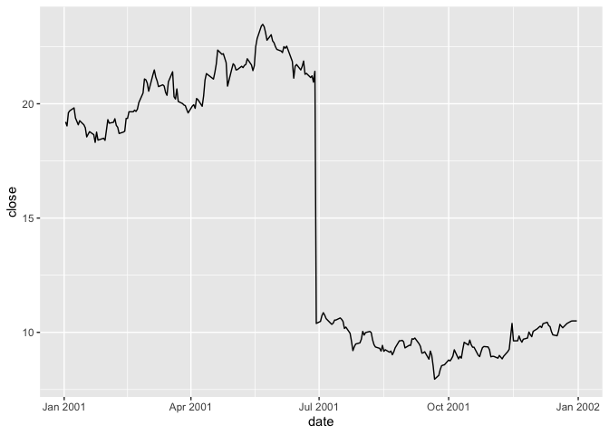
Examining the coraxdescription column, it seems likely that the change is due to a 1:0.94 bonus issue.
si_au_prc_daily |>
filter(gcode == 'bhp1', seniorsecurity == 1L,
between(date, '2001-01-01', '2001-12-31')) |>
filter(!is.na(coraxdescription)) |>
select(gcode, date, close, coraxdescription) |>
collect()| gcode | date | close | coraxdescription |
|---|---|---|---|
| bhp1 | 2001-06-29 | 10.39 | 1:0.94 bonus issue |
The coraxdescription column provides details of corporate action (CORAX) events, when available. The numberofdilutionevents field will always show a value greater than 0 when a dilution event (CORAX or dividend) has occurred and numberofcoraxevents > 0 indicates CORAX events, even if coraxdescription is not available. Likewise, numberofdividendevents > 0 can be used to find all dividend events, even when data are not available in other descriptive fields .
si_au_prc_daily |>
filter(gcode == 'bhp1', seniorsecurity == 1L,
between(date, '2001-06-27', '2001-07-02')) |>
select(gcode, date, close, factor, numberofcoraxevents) |>
collect()factor for BHP around 27 June 2001
| gcode | date | close | factor | numberofcoraxevents |
|---|---|---|---|---|
| bhp1 | 2001-06-27 | 20.946 | 1.000 | 0 |
| bhp1 | 2001-06-28 | 21.420 | 1.000 | 0 |
| bhp1 | 2001-06-29 | 10.390 | 2.065 | 1 |
| bhp1 | 2001-07-02 | 10.480 | 1.000 | 0 |
How is factor calculated? As seen in Table 10, on most dates factor will be 1, but when a CORAX or dividend event occurs, factor will reflect the factor that allows the previous day’s price to be compared with the current one. With a 1:0.94 bonus issue, if I have \(0.94\) shares one day, I will have \(1.94\) shares the next, so factor equals \(0.94 / 1.94 = 0.485\). In other words, the share price of \(21.420\) on 28 June 2001 is equivalent to a share price of \(21.420 \times 0.485 = 10.379\) on 29 June 2001.
The variable cumulativefactor is calculated from factor to facilitate adjustment of prices along the whole time series. In creating cum_factor_calcs, I replicate the calculation of cumulativefactor from factor. Note that the calculation of cumulativefactor moves from the end of the price series (implied by window_order(desc(date))) for each security (implied by group_by(gcode, seniorsecurity)) and accumulates the absolute value of factor in a multiplicative fashion.5 The calculation uses the lag() function because the first date we want to apply factor for 29 June 2001 to prices is the “next” date (in the reverse-ordered price series) or 28 June 2001.6
cum_factor_calcs <-
si_au_prc_daily |>
group_by(gcode, seniorsecurity) |>
window_order(desc(date)) |>
mutate(cum_factor_calc = exp(cumsum(log(abs(factor))))) |>
mutate(cum_factor_calc = lag(cum_factor_calc) * sign(lag(factor))) |>
window_order() |>
ungroup() |>
select(gcode, seniorsecurity, date, close, factor,
cumulativefactor, cum_factor_calc)Table 11 presents cumulativefactor, as calculated by SIRCA, and cum_factor_calc, where I replicate the calculation of cumulativefactor from factor.
cum_factor_calcs |>
filter(gcode == 'bhp1', seniorsecurity == 1L,
between(date, '2001-06-27', '2001-07-02')) |>
select(gcode, date, close, factor, cumulativefactor, cum_factor_calc) |>
arrange(date) |>
collect()factor for BHP around 27 June 2001
| gcode | date | close | factor | cumulativefactor | cum_factor_calc |
|---|---|---|---|---|---|
| bhp1 | 2001-06-27 | 20.946 | 1.000 | 1.053 | 6.913 |
| bhp1 | 2001-06-28 | 21.420 | 1.000 | 1.053 | 6.913 |
| bhp1 | 2001-06-29 | 10.390 | 2.065 | 2.175 | 3.348 |
| bhp1 | 2001-07-02 | 10.480 | 1.000 | 2.175 | 3.348 |
The cumulativefactor column can be used to adjust the closing price for the effects of corporate actions, such stock splits or entitlement offers, and dividends. Simply multiplying the close column by the cumulativefactor column will produce the adjusted price.
si_au_prc_daily |>
filter(gcode == 'bhp1', seniorsecurity == 1L,
between(date, '2001-01-01', '2001-12-31')) |>
mutate(adjustedprice = close * cumulativefactor) |>
pivot_longer(c(adjustedprice, close),
names_to = "variable", values_to = "price") |>
ggplot(aes(x = date, y = price, color = variable)) +
geom_line()
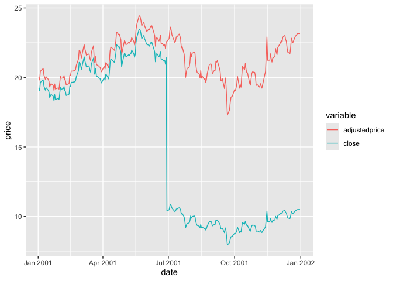
In Figure 2, adjustedprice series is everywhere lower than close because cumulativefactor adjusts for all subsequent CORAX events and these tend to cause adjusted prices to be lower as one moves back through time (e.g., bonus issues or dividends). The important thing is that the resulting adjustedprice series is consistent over its entire history and can be used to reliably measure returns for bhp1 between any two trading dates.
Exactly the same process for cumulativefactor applies for dividends as well as corporate actions. AAA (gcode: aaa2) is an exchange-traded fund that deposits money in accounts with Australian banks and pays regular dividends. The effect of its dividends on its closing price can be observed in Figure 3.
si_au_prc_daily |>
filter(gcode == 'aaa2', seniorsecurity == 1L,
between(date, '2017-01-01', '2018-12-31')) |>
mutate(adjustedprice = close * cumulativefactor) |>
select(date, close, adjustedprice) |>
pivot_longer(-date, names_to = "variable", values_to = "price") |>
ggplot(aes(x = date, y = price, color = variable)) +
geom_line()
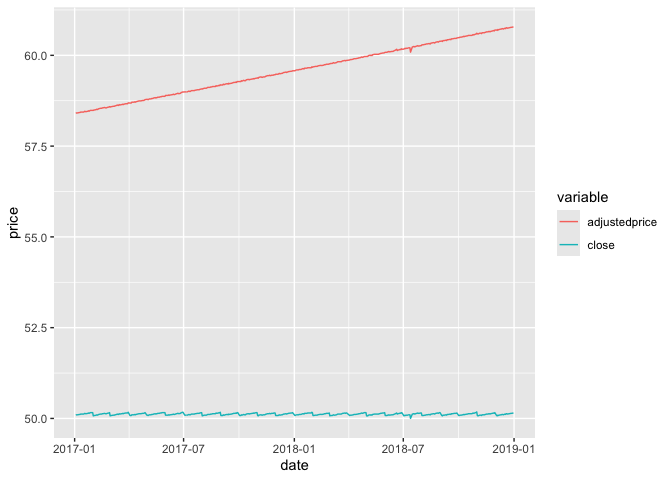
AAA
3. Plotting a distribution of price relatives for a security
The following code calculates prel, the price relative or gross shareholder return, for securities on si_au_prc_daily. By using cumulativefactor, it adjusts for corporate actions and dividends.
prels <-
si_au_prc_daily |>
mutate(adjustedprice = close * cumulativefactor) |>
group_by(gcode, seniorsecurity) |>
window_order(date) |>
mutate(prel = adjustedprice / lag(adjustedprice)) |>
ungroup() |>
window_order()Figure 4 shows the distribution of returns from Commonwealth Bank.
prels |>
filter(!is.na(prel)) |>
filter(gcode == 'cba1', seniorsecurity == 1L) |>
ggplot(aes(x = prel)) +
geom_histogram(binwidth = 0.005)
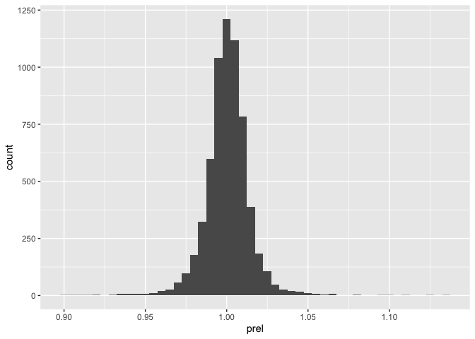
4. dayssince column
It is important to note that price relatives calculated in the previous section may not always relate to consecutive trading days. The following code calculates the number of days between consecutive observations for a given security on si_au_prc_daily.
elapsed_days <-
si_au_prc_daily |>
group_by(gcode, seniorsecurity) |>
window_order(date) |>
mutate(days_elapsed = dayssince - lag(dayssince)) |>
ungroup() |>
window_order()Figure 5 shows the distribution of days_elapsed, the number of elapsed days between trading dates calculated using using the datesince column, for Commonwealth Bank. Although CBA is a stock that is consistently traded, a less-liquid security may show large gaps in trading activity, leading to price relatives that span longer time periods.
elapsed_days |>
filter(gcode == 'cba1', seniorsecurity == 1L) |>
count(days_elapsed, sort = TRUE) |>
filter(!is.na(days_elapsed)) |>
ggplot(aes(x = days_elapsed, y = n)) +
geom_col() +
scale_x_continuous(breaks = 1:5)
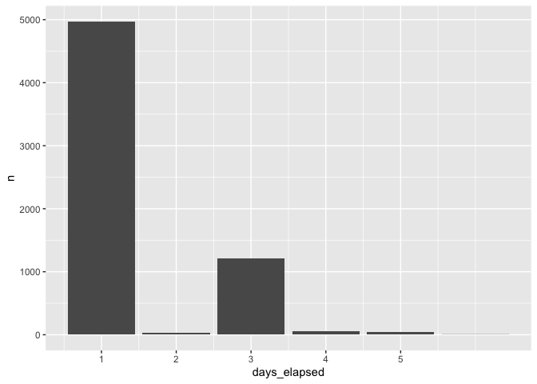
As a measure of the liquidity of a security, days_elapsed is problematic because it does not distinguish between days on which the market is open and those on which it is closed. We can improve on this measure using data from si_au_ref_trddays, a sample of which is shown in Table 12.
si_au_ref_trddays |> collect(n = 10)si_au_ref_trddays
| date | dayssince | weekday | count |
|---|---|---|---|
| 2000-01-04 | 36529 | 3 | 936 |
| 2000-01-05 | 36530 | 4 | 958 |
| 2000-01-06 | 36531 | 5 | 949 |
| 2000-01-07 | 36532 | 6 | 927 |
| 2000-01-10 | 36535 | 2 | 961 |
| 2000-01-11 | 36536 | 3 | 984 |
| 2000-01-12 | 36537 | 4 | 968 |
| 2000-01-13 | 36538 | 5 | 971 |
| 2000-01-14 | 36539 | 6 | 966 |
| 2000-01-17 | 36542 | 2 | 976 |
Using an approach described in more detail here, in place of dayssince, we can create a variable td to represent the “trading date” for each date on si_au_ref_trddays where td equals 1 on the first trading date, 2 the second trading date, and so on.
trading_days <-
si_au_ref_trddays |>
window_order(date) |>
mutate(td = row_number()) |>
distinct(date, td) |>
arrange(date) |>
compute()With trading_days in hand, we can calculate tdays_elapsed as the number of trading dates between the current date and the previous date on si_au_prc_daily for each security and date.
tdays_elapsed_df <-
si_au_prc_daily |>
inner_join(trading_days, by = "date") |>
group_by(gcode, seniorsecurity) |>
window_order(date) |>
mutate(tdays_elapsed = td - lag(td),
lag_date = lag(date)) |>
select(gcode, seniorsecurity, date, lag_date, tdays_elapsed) |>
ungroup() |>
window_order()Table 13 provides data on our improved measure of trading days between trading dates for both Commonwealth Bank (cba1) and a less liquid security (1st1). In Table 13, it can be seen that there are very few cases in which the trading days between dates is more than one for cba1, but quite a few such cases for 1st1.
tdays_elapsed_df |>
filter(gcode %in% c('cba1', '1st1'), seniorsecurity == 1L,
!is.na(tdays_elapsed)) |>
count(gcode, tdays_elapsed) |>
pivot_wider(names_from = "gcode", values_from = "n", values_fill = 0) |>
arrange(tdays_elapsed) |>
collect()cba1 and 1st1
| tdays_elapsed | 1st1 | cba1 |
|---|---|---|
| 1 | 1298 | 6314 |
| 2 | 176 | 2 |
| 3 | 79 | 1 |
| 4 | 33 | 1 |
| 5 | 21 | 0 |
| 6 | 6 | 0 |
| 7 | 4 | 0 |
| 8 | 6 | 0 |
| 9 | 2 | 0 |
| 10 | 1 | 0 |
| 11 | 2 | 0 |
| 134 | 1 | 0 |
Table 14 provides additional information on the apparent gaps in trading for Commonwealth Bank. We can use these data to investigate the cause of these gaps. Looking at the longest gap, it turns out there was a trading halt placed on 12 August 2015.
tdays_elapsed_df |>
filter(gcode == 'cba1', seniorsecurity == 1L, tdays_elapsed > 1) |>
collect()| gcode | seniorsecurity | date | lag_date | tdays_elapsed |
|---|---|---|---|---|
| cba1 | 1 | 2008-10-09 | 2008-10-07 | 2 |
| cba1 | 1 | 2015-08-17 | 2015-08-11 | 4 |
| cba1 | 1 | 2015-09-14 | 2015-09-10 | 2 |
| cba1 | 1 | 2000-03-10 | 2000-03-07 | 3 |
A natural question might be whether there are dates on si_au_prc_daily not found on si_au_ref_trddays. Table 15 shows that there are, but a small number of securities (in most cases, just one) have data on si_au_prc_daily on those days. I leave it as an exercise for the reader to understand what’s going on in these cases.
si_au_prc_daily |>
distinct(date) |>
anti_join(si_au_ref_trddays, by = "date") |>
inner_join(si_au_prc_daily, by = "date") |>
count(date) |>
mutate(wday = wday(date, label = TRUE)) |>
arrange(desc(n)) |>
collect(n = 10)si_au_prc_daily on non-trading days
| date | n | wday |
|---|---|---|
| 2014-01-01 | 3 | Wed |
| 2000-01-01 | 3 | Sat |
| 2014-06-01 | 2 | Sun |
| 2009-01-01 | 2 | Thu |
| 2014-11-01 | 1 | Sat |
| 2014-03-15 | 1 | Sat |
| 2011-09-10 | 1 | Sat |
| 2015-01-01 | 1 | Thu |
| 2009-06-08 | 1 | Mon |
| 2011-12-17 | 1 | Sat |
5. Using the seniorsecurity column
At times, some gcodes have multiple securities trading simultaneously and SIRCA provides the seniorsecurity field to distinguish different securities for a given firm. In Table 16, two classes of security are shown to be simultaneously trading for Telstra Corporation Ltd, whose gcode is tls1. These are evident from the different securityticker values: TLS and TLSCA.
si_au_prc_daily |>
filter(gcode == 'tls1',
between(date, "2008-05-01", "2008-05-07")) |>
select(gcode, seniorsecurity, date, securityticker) |>
arrange(date) |>
collect()securityticker values for Telstra (tls1)
| gcode | seniorsecurity | date | securityticker |
|---|---|---|---|
| tls1 | 0 | 2008-05-01 | TLSCA |
| tls1 | 1 | 2008-05-01 | TLS |
| tls1 | 0 | 2008-05-02 | TLSCA |
| tls1 | 1 | 2008-05-02 | TLS |
| tls1 | 0 | 2008-05-05 | TLSCA |
| tls1 | 1 | 2008-05-05 | TLS |
| tls1 | 0 | 2008-05-06 | TLSCA |
| tls1 | 1 | 2008-05-06 | TLS |
| tls1 | 0 | 2008-05-07 | TLSCA |
| tls1 | 1 | 2008-05-07 | TLS |
6. Negative factor values and zero volumeonmkt values
When there is either no observed trade price before an event or no price after the event, a factor of -1 is assigned to that event. This can occur both in the beginning and the end of the lifetime of the security. Table 17 shows that relatively few observations have negative factor values.
si_au_prc_daily |>
mutate(neg_factor = factor < 0) |>
count(neg_factor)| neg_factor | n |
|---|---|
| FALSE | 9050456 |
| TRUE | 234 |
The calculation of cumulativefactor when factor is negative seems to follow the calculation of cum_factor_calc provided above. That is the absolute value is accumulated and multiplied by the sign of the applicable factor value. Table 18 shows the alignment of cumulativefactor and cum_factor_calc calculated in this way for a stock with a negative value of factor.
cum_factor_calcs |>
filter(gcode == "par1", seniorsecurity == 1L,
between(date, "2018-12-03", "2019-02-18")) |>
select(-seniorsecurity) |>
arrange(date)cumulativefactor with negative factor values
| gcode | date | close | factor | cumulativefactor | cum_factor_calc |
|---|---|---|---|---|---|
| par1 | 2018-12-11 | 0.003 | 1.000 | 0.004 | 1.308 |
| par1 | 2018-12-12 | 0.003 | 1.000 | 0.004 | 1.308 |
| par1 | 2018-12-14 | 0.004 | 1.000 | 0.004 | -1.308 |
| par1 | 2019-01-08 | NA | -1.308 | -0.005 | 1.000 |
| par1 | 2019-01-24 | 0.005 | 1.000 | -0.005 | 1.000 |
| par1 | 2019-02-18 | 0.009 | 1.000 | -0.005 | 1.000 |
Table 19 shows that the calculation used to produce cum_factor_calc does not always match the valye in cumulativefactor. In this case, it seems that cumulativefactor is mysteriously “reset” to \(1\) on 27 September 2018. Further research would be needed to determine
cum_factor_calcs |>
filter(gcode == "gcm2", seniorsecurity == 1,
factor != 1) |>
select(-seniorsecurity) |>
arrange(date)factor values
| gcode | date | close | factor | cumulativefactor | cum_factor_calc |
|---|---|---|---|---|---|
| gcm2 | 2016-09-29 | NA | 1.010 | 1.010 | 1.155 |
| gcm2 | 2016-12-29 | 0.95 | 1.010 | 1.020 | 1.143 |
| gcm2 | 2017-03-30 | NA | 1.010 | 1.031 | 1.132 |
| gcm2 | 2017-06-29 | NA | 1.012 | 1.043 | 1.119 |
| gcm2 | 2017-09-28 | NA | 1.011 | 1.054 | 1.107 |
| gcm2 | 2017-12-28 | NA | 1.009 | 1.064 | 1.096 |
| gcm2 | 2018-03-28 | NA | 1.009 | 1.074 | 1.086 |
| gcm2 | 2018-06-28 | NA | 1.018 | 1.092 | 1.068 |
| gcm2 | 2018-09-27 | NA | 1.007 | 1.101 | 1.060 |
| gcm2 | 2018-12-28 | NA | 1.015 | 1.117 | 1.044 |
| gcm2 | 2019-03-28 | NA | 1.008 | 1.126 | 1.036 |
| gcm2 | 2019-06-06 | NA | 1.023 | 1.152 | 1.013 |
| gcm2 | 2019-06-27 | 1.79 | 1.007 | 1.160 | 1.006 |
| gcm2 | 2019-09-27 | NA | 1.006 | 1.166 | 1.000 |
| gcm2 | 2019-11-20 | NA | -1.000 | 0.000 | NA |
Table 20 flags other difficult-to-explain cumulativefactor values (excluding those where there are sign differences between cum_factor_calc and cumulativefactor). While further research would be needed to understand these, these are fortunately quite rare.
cum_factor_calcs |>
filter(gcode != "gcm2") |>
filter(abs(abs(cumulativefactor) - abs(cum_factor_calc)) > 0.001) |>
distinct(gcode, cumulativefactor, cum_factor_calc) |>
arrange(gcode, cumulativefactor) |>
collect(n = 20)factor values
| gcode | cumulativefactor | cum_factor_calc |
|---|---|---|
| 14d1 | 1.000 | 1.027 |
| 14d1 | 1.021 | 1.006 |
| 14d1 | 1.027 | 1.000 |
| 1ad1 | 1.000 | 1.030 |
| 1ad1 | 1.006 | 1.024 |
| 1ad1 | 1.024 | 1.006 |
| 1ad1 | 1.030 | 1.000 |
| 1al1 | 1.000 | 1.269 |
| 1al1 | 1.040 | 1.221 |
| 1al1 | 1.066 | 1.191 |
| 1al1 | 1.104 | 1.150 |
| 1al1 | 1.134 | 1.119 |
| 1al1 | 1.175 | 1.081 |
| 1al1 | 1.199 | 1.058 |
| 1al1 | 1.246 | 1.019 |
| 1al1 | 1.269 | 1.000 |
| 1gov1 | 1.000 | 1.031 |
| 1gov1 | 1.002 | 1.029 |
| 1gov1 | 1.004 | 1.027 |
| 1gov1 | 1.006 | 1.025 |
The example provided in Table 21 shows dividends between 2000-03-06 and 2001-09-28 without any trading. As no trading was observed prior to these dividend events, the factor and dividendfactor fields contain a value of -1. This makes sense, as one could not meaningfully push the sequence of stock returns back to dates before 2002-03-15, as there are no traded prices. There is a non-negative factor value for 2002-03-18, presumably because there are prices reported after 2002-03-18.
si_au_prc_daily |>
filter(gcode == 'npx1', date <= '2002-09-23', seniorsecurity == 1) |>
select(gcode, date, close, dividend, factor, dividendfactor, volumeonmkt) |>
collect()factor values: npx1
| gcode | date | close | dividend | factor | dividendfactor | volumeonmkt |
|---|---|---|---|---|---|---|
| npx1 | 2000-03-06 | NA | 0.065 | -1.000 | -1.000 | 0 |
| npx1 | 2000-09-29 | NA | 0.054 | -1.000 | -1.000 | 0 |
| npx1 | 2001-03-19 | NA | 0.068 | -1.000 | -1.000 | 0 |
| npx1 | 2001-09-28 | NA | 0.059 | -1.000 | -1.000 | 0 |
| npx1 | 2002-03-15 | 3.34 | NA | 1.000 | 1.000 | 500 |
| npx1 | 2002-03-18 | NA | 0.067 | 1.023 | 1.023 | 0 |
| npx1 | 2002-07-17 | 2.95 | NA | 1.000 | 1.000 | 200 |
| npx1 | 2002-09-23 | NA | 0.078 | 1.024 | 1.024 | 0 |
Table 22 shows another example with a dividend on 2004-07-05. However, no price was observed after the event, and hence the factor and dividendfactor fields contain a value of -1. Note that there is a price in the close field on 2004-07-05 but it was not observed that day, after the dividend event. This is evident from the 0 value for VolumeOnMkt, and confirmed by NA or 0 values for open, high, low. This price is simply the previous observed trade price carried forward. This makes sense, as one could not meaningfully push the sequence of stock returns forward to dates after 2004-07-02, as there are no traded prices.
si_au_prc_daily |>
filter(gcode == 'wsf1', date >= '2004-07-01', seniorsecurity == 1) |>
select(gcode, date, close, dividend, factor, dividendfactor, volumeonmkt) |>
collect()npx1
| gcode | date | close | dividend | factor | dividendfactor | volumeonmkt |
|---|---|---|---|---|---|---|
| wsf1 | 2004-07-01 | 15.48 | NA | 1 | 1 | 8968726 |
| wsf1 | 2004-07-02 | 15.60 | NA | 1 | 1 | 16453850 |
| wsf1 | 2004-07-05 | 15.60 | 0.136 | -1 | -1 | 0 |
si_au_prc_daily |>
filter(adjustmentfactor < 0) |>
count(adjustmentfactor)adjustmentfactor values
| adjustmentfactor | n |
|---|---|
| -1.308 | 1 |
| -0.025 | 1 |
| -1.000 | 69 |
7. Calculating a cumulative factor excluding dividends
The provided cumulativefactor field of si_au_prc_daily is calculated by cumulating the factor column, whcih adjusts for both corporate actions and dividends. The following example shows how to calculate an adjustment excluding dividends, It uses the adjustmentfactor field, which provides dilution factors for just the CORAX events (when followed at some time by a valid close price).
Use the adjustmentfactor field, which does not account for dividends. Visualise the new adjustment and compare to the adjustment from the example in part 1 Note that the CorpAdjustedPrice, which is calculated without including dividends, looks identical to the close price as no corporate actions have occurred within this time frame.
The following shows the effect that dividends can have on the adjusted price series. The AdjustedPrice series incorporates both CORAX factors and dividend factors, whereas the CorpAdjustedPrice series incorporates only CORAX adjustments and ignores dividends. The CORAX-only price series shows a visible fall at the time when the dividend occurs as the value of the dividend is not accounted for.
adj_rets <-
si_au_prc_daily |>
group_by(gcode, seniorsecurity) |>
window_order(desc(date)) |>
mutate(corporatefactor = exp(cumsum(log(abs(adjustmentfactor))))) |>
mutate(corporatefactor = lag(corporatefactor) *
sign(lag(adjustmentfactor))) |>
mutate(CorpAdjustedPrice = corporatefactor * close,
AdjustedPrice = close * cumulativefactor) |>
window_order() |>
ungroup()To plot some date, we first construct anz_cum, which is a version of adj_rets focused on ANZ’s stock price.
anz_cum <-
adj_rets |>
filter(gcode == "anz1", seniorsecurity == 1L) |>
select(gcode, date, CorpAdjustedPrice, AdjustedPrice, close) |>
compute()Figure 6 provides a plot of CorpAdjustedPrice (no adjustment for dividends) and AdjustedPrice (adjusted for dividends) for ANZ. One thing that makes this plot difficult to interpret is that the adjustment factors are calculated retrospectively. So going back in time the plots “start” at the same point and “end” at different prices.
anz_cum |>
pivot_longer(cols = ends_with("Price"),
names_to = "series", values_to = "price") |>
filter(!is.na(price)) |>
ggplot(aes(x = date, y = price, color = series)) +
geom_line() +
theme(legend.position = "top")
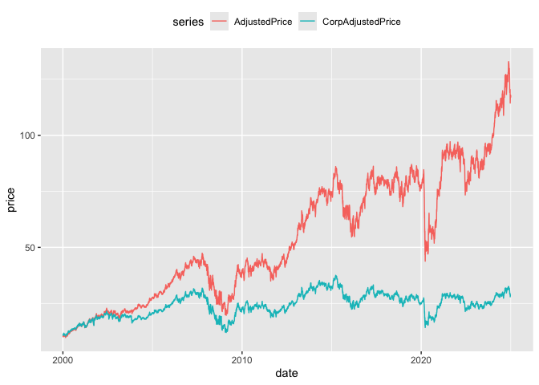
CorpAdjustedPrice and AdjustedPrice
Figure 7 provides a more intuitive presentation. Rather than calculating returns using the adjusted prices directly, an alternative measure of returns is constructed by calculating a price relative using adjusted prices and then accumulating those returns. As can be seen in Figure 7, the two price series start at the same point (no scare quotes because this plot is going forward in time) and end at different points. As would be expected the cumulative returns without dividends are significantly lower by the end of the price series.
anz_cum |>
group_by(gcode) |>
window_order(date) |>
mutate(across(c(AdjustedPrice, CorpAdjustedPrice),
\(x) coalesce(x / lag(x), 1)),
across(c(AdjustedPrice, CorpAdjustedPrice),
\(x) exp(cumsum(log(x))))) |>
window_order() |>
pivot_longer(cols = ends_with("Price"),
names_to = "series", values_to = "price") |>
filter(!is.na(price)) |>
ggplot(aes(x = date, y = price, color = series)) +
geom_line() +
theme(legend.position = "top")
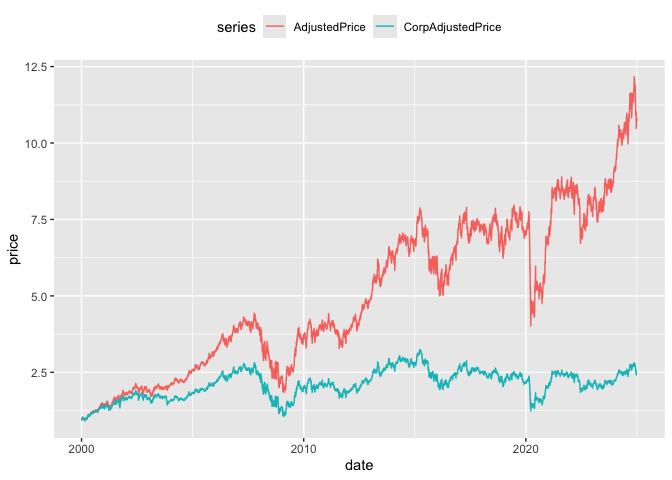
CorpAdjustedPrice and AdjustedPrice
Table 24 presents an example of an even larger difference between the different forms of adjusted price. The dividend of 0.4497 on 2012-07-09 precedes a fall in close price from 0.575 to 0.019. Adjusting only for CORAX events clearly leads to significantly different measures of share price performance when dividends are also present. If done with case, CORAX adjustments might also be used to standardise earnings information through time.
adj_rets |>
filter(gcode == "dmg1",
between(date, "2012-07-01", "2012-07-13"),
seniorsecurity == 1) |>
select(gcode, date, close, dividend, CorpAdjustedPrice, AdjustedPrice) |>
arrange(date) |>
collect() dmg1
| gcode | date | close | dividend | CorpAdjustedPrice | AdjustedPrice |
|---|---|---|---|---|---|
| dmg1 | 2012-07-02 | 0.570 | NA | 4.577 | 0.570 |
| dmg1 | 2012-07-03 | 0.570 | NA | 4.577 | 0.570 |
| dmg1 | 2012-07-04 | 0.575 | NA | 4.617 | 0.575 |
| dmg1 | 2012-07-05 | 0.575 | NA | 4.617 | 0.575 |
| dmg1 | 2012-07-06 | 0.575 | NA | 4.617 | 0.575 |
| dmg1 | 2012-07-09 | 0.019 | 0.45 | 0.019 | 0.602 |
| dmg1 | 2012-07-10 | 0.020 | NA | 0.020 | 0.634 |
| dmg1 | 2012-07-11 | 0.019 | NA | 0.019 | 0.602 |
| dmg1 | 2012-07-12 | 0.018 | NA | 0.018 | 0.571 |
| dmg1 | 2012-07-13 | 0.018 | NA | 0.018 | 0.571 |
8. Segmentation by trade type
The si_au_prc_daily table also contains information on the count, volume, and value of trades by various categories. This section provides examples of aggregating trading activity by different trade types:
- Trading activity across the whole market
- Segmentation by on- versus off-market trades
- Proportion of on-market non-crossing trades that are carried out through ASX Centre Point
- Comparison of lit-pool and dark-pool trading
- Proportion of dark market trades that are carried out through ASX Centre Point
Figure 8 shows the value of trading activity across the year plotted against time. Trading activity can vary significantly from month to month.
si_au_prc_daily |>
mutate(month = floor_date(date, "month")) |>
group_by(month) |>
summarize(ValueWholeMkt = sum(valueonmkt + valueoffmkt, na.rm = TRUE)) |>
ggplot(aes(x = month, y = ValueWholeMkt)) +
geom_line()
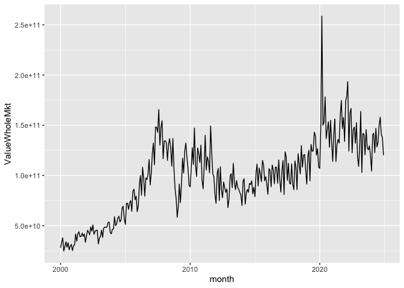
si_au_prc_daily |>
mutate(month = floor_date(date, "month")) |>
group_by(month) |>
summarize(across(c(valueonmkt, valueoffmkt), \(x) sum(x, na.rm = TRUE))) |>
pivot_longer(-month, names_to = "location", values_to = "value") |>
ggplot(aes(x = month, y = value, color = location)) +
geom_line() +
theme(legend.position = "top")
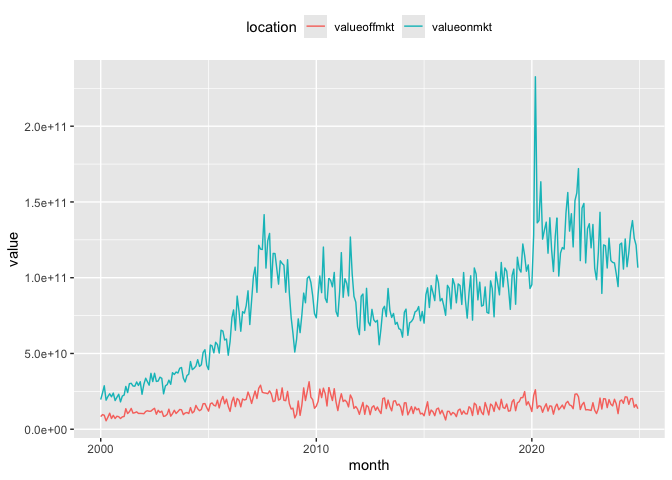
As mentioned above, it is possible to segment the market by the visibility of trades. In the lit market, the order book is public and all orders (bid and offer) are visible to all participants. In contrast, in the dark market, the order book is not visible until trades are executed. The dark pool consists of both on-market and off-market crossing trades, as well as any Centre Point trades. This following section shows the distribution of activity across the lit and dark markets over time. Note: As our Centre Point trade measures include crossing trades, Centre Point crossing trade volumes need to be subtracted to avoid double-counting these trades in the calculation of the dark pool trading.
si_au_prc_daily |>
mutate(month = floor_date(date, "month")) |>
filter(volumeonmkt > 0) |>
group_by(month) |>
summarize(Dark = sum(volumeoffmktcross + volumeonmktcross +
volumecentrept - volumecentreptcross, na.rm = TRUE),
Lit = sum(volumeonmkt + volumeoffmkt -
(volumeoffmktcross + volumeonmktcross +
volumecentrept - volumecentreptcross), na.rm = TRUE)) |>
pivot_longer(cols = -month, names_to = "market", values_to = "volume") |>
ggplot(aes(x = month, y = volume, color = market)) +
geom_line() +
theme(legend.position = "top")
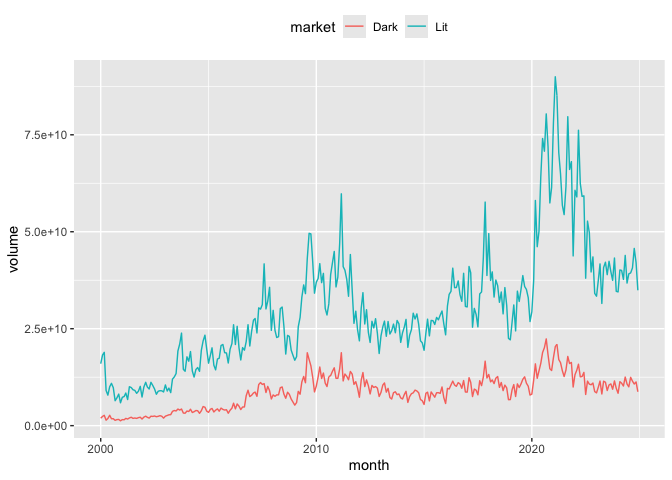
The ASX Centre Point matching system provides a market for dark pool liquidity. As such, Centre Point trades are a subset of on-market trades. More information on ASX Centre Point can be found on the ASX website. The composition of each market segment is displayed at the top of the si_au_prc_daily tab in our data dictionary for this service. Figure 11 shows the average proportion of on-market non-crossing trades that are directed through ASX Centre Point over time.
si_au_prc_daily |>
filter(valueonmkt > 0, valuecentrept > 0) |>
mutate(month = floor_date(date, "month")) |>
group_by(month) |>
summarize(AvgPropCentrePtNonCross =
sum(valuecentrept - valuecentreptcross, na.rm = TRUE) /
sum(valueonmkt - valueonmktcross, na.rm = TRUE)) |>
ggplot(aes(x = month, y = AvgPropCentrePtNonCross)) +
geom_line()
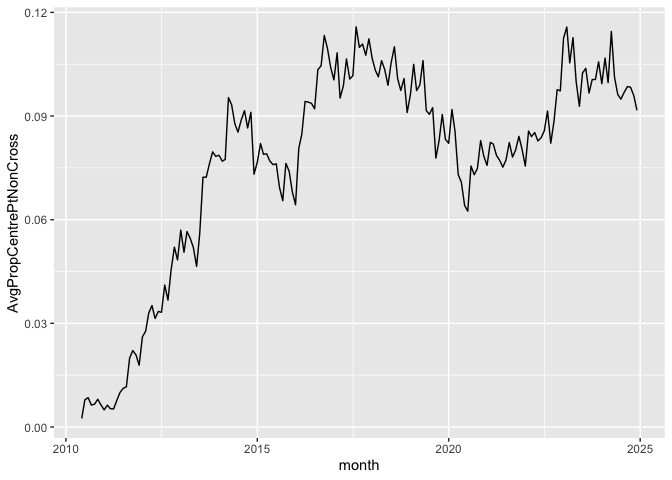
It is a simple matter to focus on particular market segments. For example, the previous query can be targeted on companies whose market capitalisation is less than $50 million, with results depicted in Figure 12.
si_au_prc_daily |>
filter(close * shares < 50000000,
valueonmkt > 0, valuecentrept > 0) |>
mutate(month = floor_date(date, "month")) |>
group_by(month) |>
summarize(AvgPropCentrePtNonCross =
sum(valuecentrept - valuecentreptcross, na.rm = TRUE) /
sum(valueonmkt - valueonmktcross, na.rm = TRUE)) |>
ggplot(aes(x = month, y = AvgPropCentrePtNonCross)) +
geom_line()
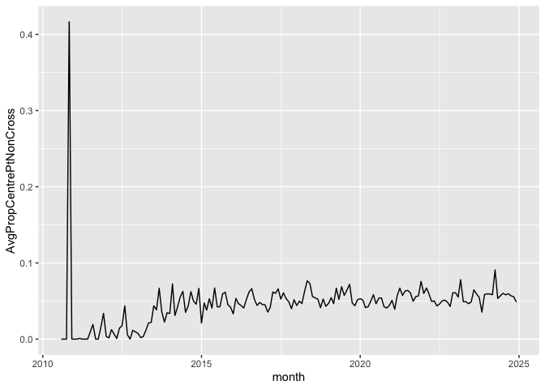
Finally, Figure 13 shows the share of the dark market volumes traded on Centre Point.
si_au_prc_daily |>
filter(valueonmkt > 0, valuecentrept > 0) |>
mutate(Dark = volumeoffmktcross + volumeonmktcross +
volumecentrept - volumecentreptcross,
CentrePt = volumecentrept - volumecentreptcross) |>
mutate(month = floor_date(date, "month")) |>
group_by(month) |>
summarize(AvgPropCentrePtDark = mean(CentrePt / Dark, na.rm = TRUE)) |>
ggplot(aes(x = month, y = AvgPropCentrePtDark)) +
geom_line()
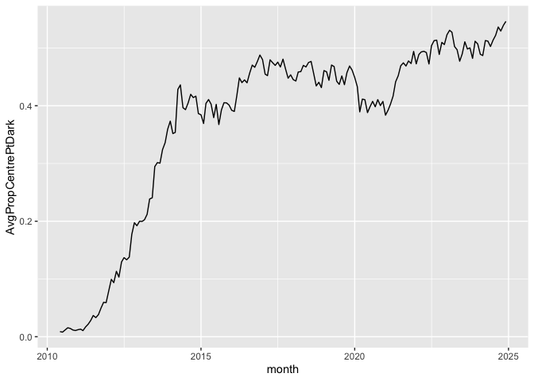
dbDisconnect(db)Footnotes
Execute
install.packages(c("tidyverse", "DBI", "duckdb", "arrow", "farr", "dbplyr"))within R to install all the packages you need to run the code in this note. Whileduckdbandarroware not listed below, they are needed to run the download script and to create the database we will use.↩︎See SIRCA’s documentation for details on getting the data.↩︎
While we access the data in a database throughout, most of the SQL is generated from
tidyverse(R) code rather than being written by us directly.↩︎Users with a background in SQL may find the SQL primer I wrote [here] to be a useful introduction to the
dplyrpackage (this is the component of thetidyversepackage that provides the relevant functions).↩︎The reason for taking absolute values and accounting for the sign of
factoris discussed below in Section 3.6.↩︎Note that the calculation of
cum_factor_calcoccurs on two separate lines, as DuckDB does not allow nesting of window functions, such ascumsum()andlag(). For more on window functions, see here.↩︎